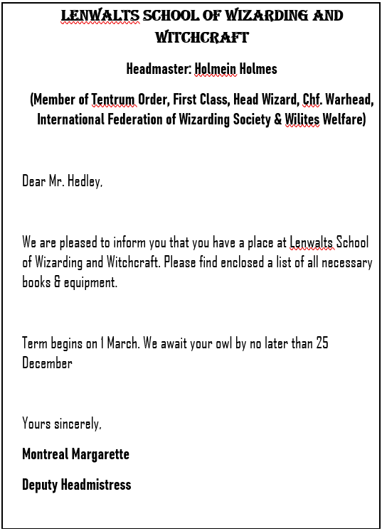
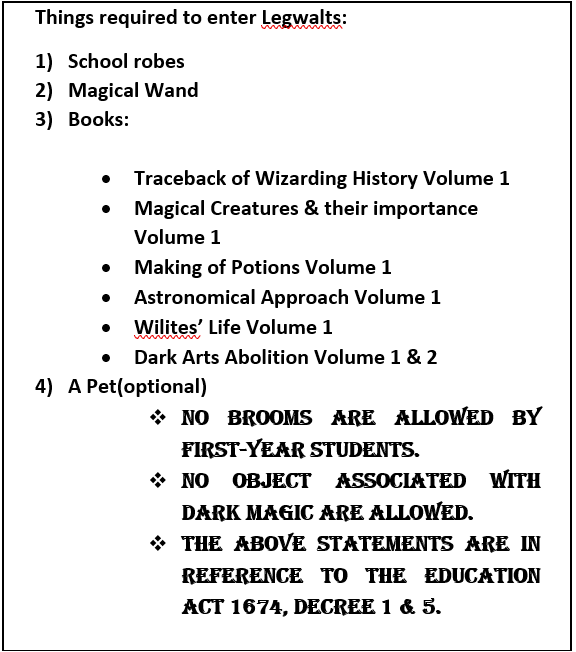

Ushering in of Magical World
It was usual wintery day of November in Washington. Sun was shining brightly in the dim clouded sky, everyone was happy that after an abysmal week with no sunlight finally sun was out with its cool but bright rays. A 11-year-old little boy, who was wearing a square-shaped spectacles along with his old winter robes, was walking in a park near Giggle Street who was looking as if he was not happy with the weather. The boy was named, Regwart Hedley. His parents were quite disrespected all around the wizarding world. People usually say that his parents, Alex Hedley & Emily Charles, had planned to capture the whole Wizarding World and Wilites(Normal Human) World and they had got what they deserve, death sentence. Regwart was an orphan since his parents were cursed to death. The Tale had been told to him by his aunt, Fren Charles, the elder sister of Regwart’s mother. He had been brought up by his uncle(Joan Mural) & aunt since his parents had been sent to Vileontex(Wizards’ Prison). Joan Mural was very well-known wizard, who worked for Ministry in the Department of Magical Artefacts & Articles. They had two children named, Greg Mural & Dren Mural. The former was elder one who had completed his schooling 6 years ago & has been serving the of Wizarding society since then like is father. The latter is still in learning phase he was three years older than Regwart & is studying in ‘Lenwalts school of Wizarding and Witchcraft’ in 3rd year has been giving final exams of third year & will be at home during 3 months term end leave starting right before Christmas.
Though Regwart became very angry whenever people say anything bad about his parents he had to control his anger to save him from anger of his uncle & aunt (who usually didn’t give him food the whole day when he misbehaved or do anything wrong whether by mistake or not). He also had an elder brother, Bren Hedley, who went missing since he had completed his wizard schooling four years ago. There were rumors that he had joined the Grimlord (one of the Darkest Wizard the wizarding world ever seen who had rose to power after the disappearance of Bren).
As usual ‘Wizards’ Gazette’ (The newspaper of wizarding world) had reached the doors of Murals at 8 A.M. sharp by Delivery Owls. Mr. Mural yelled in his ever-harsh voice “Regwart, bring the Gazette to me”. Regwart ran as fast he could ran & picked the newspaper from the door & ran toward the House No. 422 of Crizart Sphere. The house looks a lot like a wilite’s house with it exterior being inspired by wilite Indian architecture & interior was designed according to Chinese Shen-Shui. It could be look as if they belong to a Wilite South Asian culture but believe it or not their ancestors belonged to pure-blooded American class who had been living in Wizardian U.S.A since more than 6 B.C. ago & they had nothing to do with any other continent. Though Mrs Mural was very much inspired by the Wilites’ culture but she still considered them as Mud-Bloods. Her family’s thought were not too different from her’s. Regwart’s father, Alex, belonged to a wilite American family that had last recorded the presence of magic in their family more than five hundred years ago before Alex showed that he has acquired some magical traits.
Just when he put leg inside the house an owl came towards uncle Mural from window of kitchen. A letter was tied to the leg of the owl. Uncle Mural untied the letter from the legs of owl & read silently. After reading the letter Uncle Joan face got glittered up. He quickly ran towards kitchen where Aunt Fren was cooking breakfast letter was still in his hand. She was quite shocked to see him so happy & when she asked him the reason he handed her the letter. She too read it silently & her face too glammed up with happiness.
She faced towards Regwart & asked him in her most sweetest voice Regwart had ever heard “Reggy, please read this letter for us aloud”. For a few seconds Regwart thought that he is dreaming but soon he realized that he is in of his aunt as her aunt voice again turn harsh as ever. When he read the letter his eyes too glittered up the letter was from ‘Lenwalts School of Wizarding and Witchcraft’ . He was waiting for the letter since last year when he got to know that he is soon going to be a part of School of Wizarding and Witchcraft. Also, he was happy because now he was going away from her uncle & aunt who had treated him badly ever since they had got him & his brother. He read the letter aloud:

A small list was also attached with the letter in which few objects were written that are to be bought before coming to Lenwalts. Regwart read that too aloud:

Aunt Fren said that she will get all these stuffs next time when she will go to Knuckle Ground (Knuckle Ground is the Wizardment authorized market place where every kind of wizarding marketing items can be sold except stolen ones & Dark Magical items).
Soon afterwards Aunt bought all the items listed for Regwart except Wand as wizards do not choose wand the wand chooses wizard hence Regwart has to be there while choosing wand hence he went to Knuckles Ground next morning with Uncle. Regwart was very excited about visiting the place. Knuckles Ground was quite a well-maintained place. The journey was quite long & tiring &now he was able to understood the reason why his aunt never wanted to travel here. Though Regwart was tired his tiredness went out just after seeing a big golden dragon at the mouth of Knuckles Ground. This was the first time when he had seen dragon though he had read about them a lot in newspaper & heard about them from Dren & Greg. Now the enthusiasm & energy-level were just at top of his head. They entered the market without any problem a wizard guard greeted them, “Hello & welcome to the land of wizarding items, Knuckles Ground”. After the warm welcome by guard Regwart started looking around the place though he had to stick with Uncle Joan but his eyes were just wandering around all over the Knuckles Ground. He was shocked to find to many shops at one place earlier he used to think that there would only a few shops there. There were many wizards who were shopping as the Christmas was nearing. Many wizards were waving happily from inside the photos on the walls of shops at the passerby. He saw an Owl in the pet shop he asked Mural for it. Regwart thought that he would just deny him but it looked as if he was in good mood he immediately moved towards the pet shop & bought him an Owl. He named Owl as ‘Zordym’.
Finally, after a long run in Knuckles Ground they found their stop at “Chappels’ & sons co.” shop which was one of the best wand shop in the whole world. A board was stuck on the glass panels of the shops with few words written on: ‘IN THE SERVICE OF THE GREAT WIZARDING WORLDS SINCE 365 B.C’. Scroniger Chappel, the owner of the shop welcomed them. He was the 144th generation who had been running this shop. He was looking like a fat but polite Irish man. He handed him a wand & said “Hermicule, 9 and ½ inches, a very fast & strong wand”. He asked him to lift the wand but as soon as he lifted the wand a storm like wind started blowing & stopped after few seconds. Chappel apologized & said actually wand chooses the wizard that’s why it had happened. He put that wand back took out a new wand “Prodigo,11 and ½ inches, one of the most powerful wand ever produced by us it is the sibling of wand of your brother Bren, Rolten, 12 inches, it was one of the oldest want ever produced by us”. As soon as Regwart lifted the wand a golden & silver like mist came out of want. Chappel cried in happiness “Lumos, this is it, this is it m’boy. This is your wand Regwart”. Uncle Mural bought the wand & took him back to home while Regwart was astonished by immense beauty & strength of the wand which he had owned from now onwards.
Throughout the day he was thinking how it would be to go to school along with Dreg. Though after Thinking about Dreg, he felt bad at his homecoming as he usually does everything to tease Regwart & make every day bad for him. Now he was happy that he had a new friend, Zordym. He used to play with him whenever he got time. The days passed on it was the day just before Christmas when Dreg was coming home. At the eve Aunt Fren came towards Regwart’s room (which was no better than a shed of cows). She told him that they are going to pick up Dreg & by ‘they’, she means she & uncle Joan & he must behave well while in their absence they are leaving Robert to look after him. Robert was a young boy as same age as of Dren. Both were in same house & same year he just came one week earlier because of some urgent work. He was no less than Dren in teasing him & putting him in problems.
Dren & Robert, both used him as an object on which they practice their new spells & hexes. Robert came in from back door greeted aunt Fren & Uncle Joan. Then he moved towards Regwart & gave him a wicked smile. Regwart knew what he is going to do. He quickly went to upstairs where his room was located & hid Zordym & came back. Robert was looking at him curiously. Aunt warned Regwart again & went to pick Dren. Robert was just about to start throwing many spells at him as soon as Murals disapparated to Washington Station. Though this time Regwart was ready for this & gave him a not-so-pleasant surprise by using ‘Flipendo’ spell at him before Robert could use any spell & made him to fell down & then a Body-Binding curse did it all for him. Robert was looking quite surprised how he had learnt this. Regwart had learnt few spells from the books of Dren last time when he came home. He copied few spells which he thought quite easy. He had also learnt Counter-Spells of them & freed him once it was the time for Murals to come home along with Dren. Robert had just put wand at him suddenly Murals were at home. Robert stopped & quickly went to Dren & hugged him & started talking with him. Aunt Fren asked him to stay there for dinner but he refused politely & said goodbye to everyone & went back to his home. Aunt Fren cooked the favourite dishes of Dren that night. After good dinner she ordered Regwart & Dren to go to sleep. Both them wished Good Night to each other & went to their rooms. While the day was quite tiring for Regwart but he was still not able to sleep due the matter-of -fact that he had finally thwart Robert from unnerving him by his spells & hexes.